Stanford CS231n Project
Overview of data
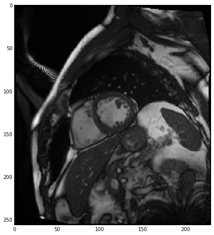
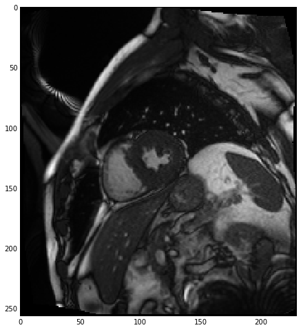
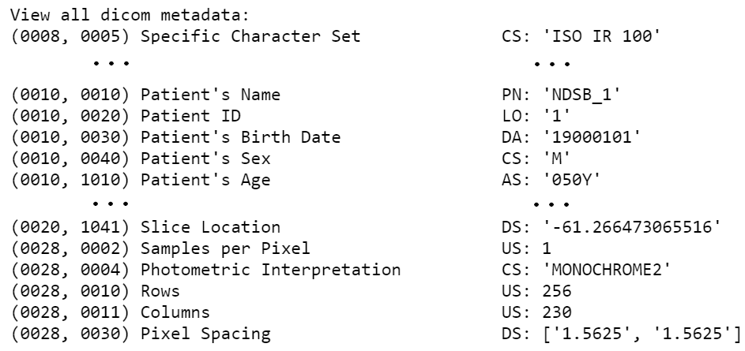
Our first inclination to handle irregularities was to just crop all of them to be square using the shorter side and then resizing them to be the same size. While this worked well for some, it didn't for others whose centroid (the region with the most relevant info) were not centered.
Exploration of the folder structure
slices
dcm files
Scaling to volume, localize centroid crop
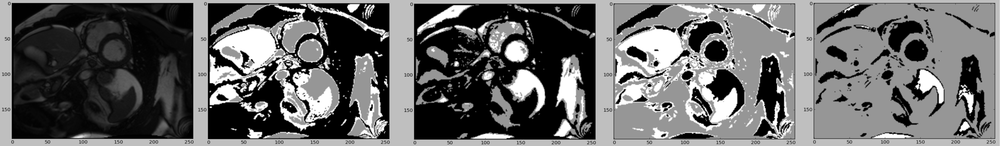
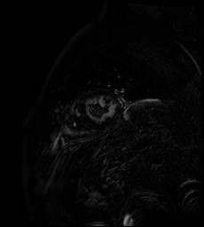
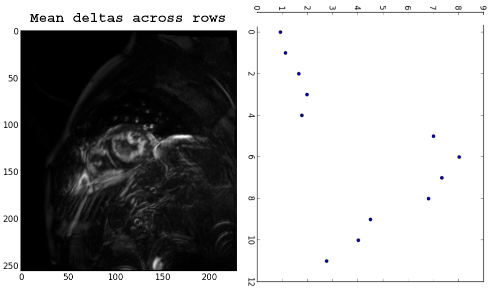
We decided to look at the deltas for localization and it seemed to work well.


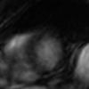
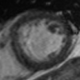
Constrast fix
Some of the images differed greatly in pixel range, with many that were so dark it was difficult to see the LV. Thus, we used histogram equalization on the original dcms and deltas after cropping with mean deltas.
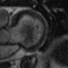
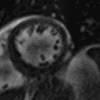
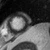
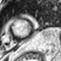
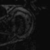
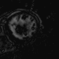
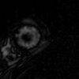
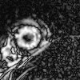
Dealing with slice and dcm irregularities
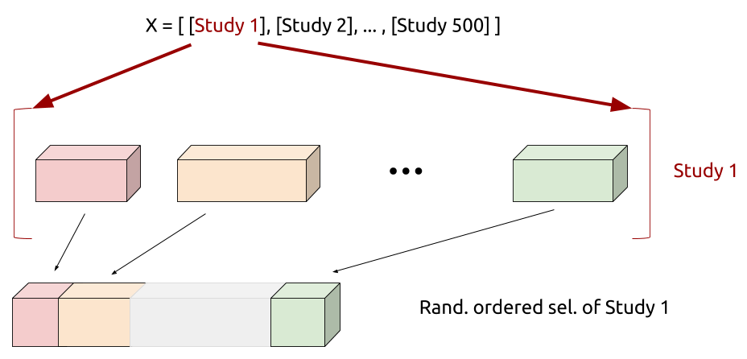
The data has wide variations in the number of slices per study and the number of dcm images in each slice folder. This means we cannot easily create standardized tensor shapes for each input. To solve this, we fix the channel size and do random sampling for each study and map that to the volumes. We random sample of each iteration and that would be a way of regularization.